Guides for Umrah and Hajj
Plain-language guidance for every stage of the journey, from planning your trip to the days after you return. Written for first-time and returning pilgrims, women and families.

Entering ihram on a flight: miqat guidance
Most pilgrims travelling from the UAE pass a miqat in the air. How to prepare at home, at the airport and on board, so you are ready before you reach it.
Read the guide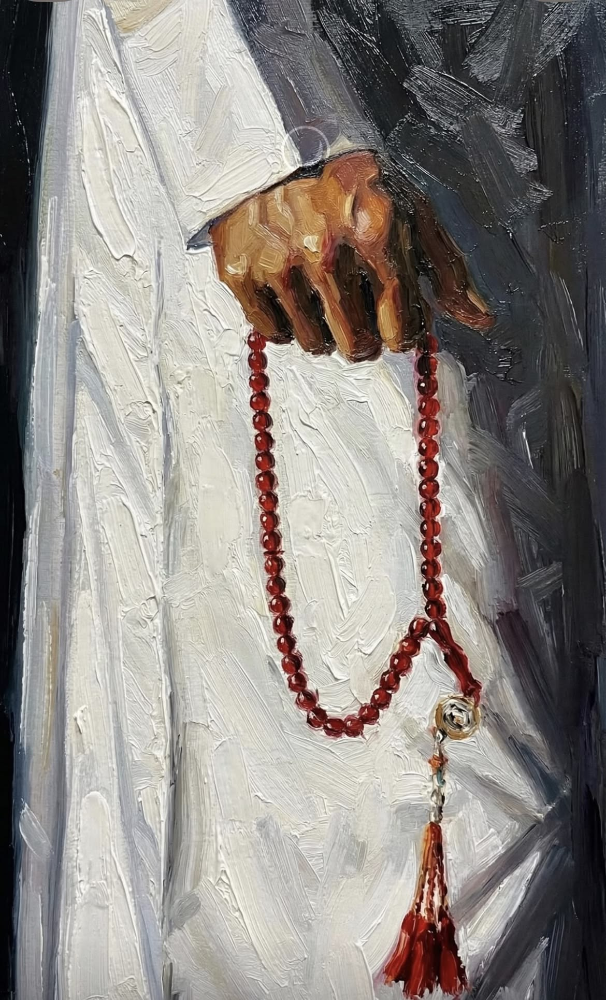
What to pack for Umrah: a complete checklist
Documents, ihram, fragrance-free care, prayer essentials and what to leave at home, with a checklist you can tick off.
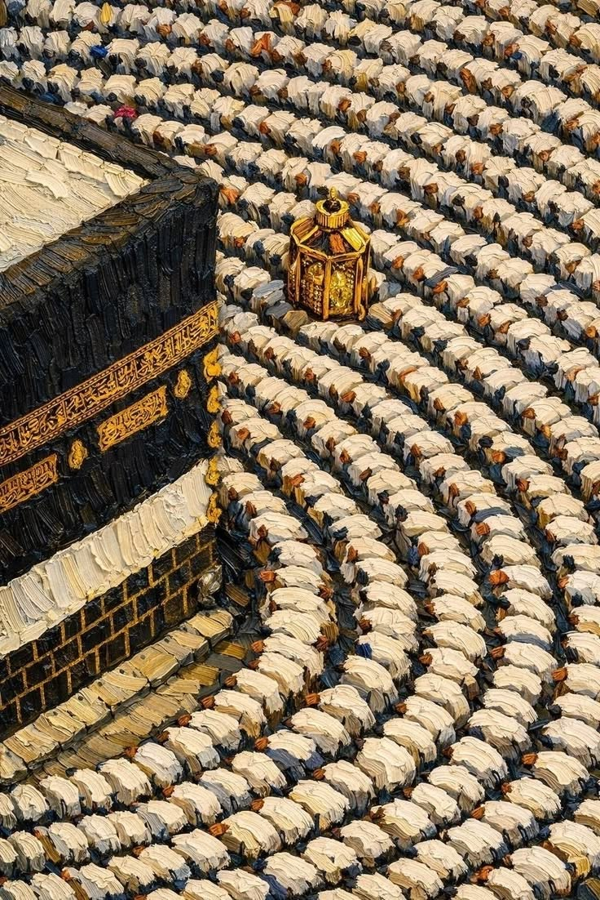
In preparationThe rites of Umrah, step by step
Ihram, tawaf, sa'i and hair cutting or trimming, explained in order with what to expect at each stage.
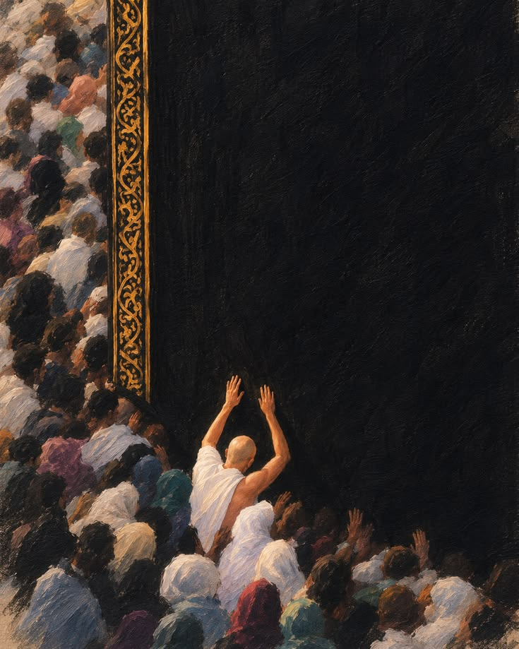
In preparationYour first Umrah: what to expect
A calm overview for first-time pilgrims: the journey, the rites, the crowds and how to prepare in the weeks before you travel.
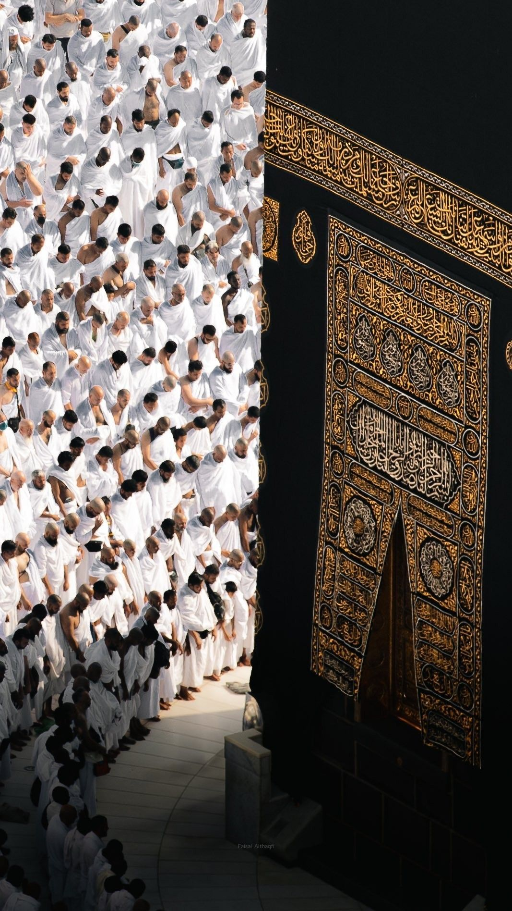
In preparationTawaf and sa'i: practical tips for busy times
Quieter times, staying together as a group, footwear storage, water and rest, and support for older pilgrims.
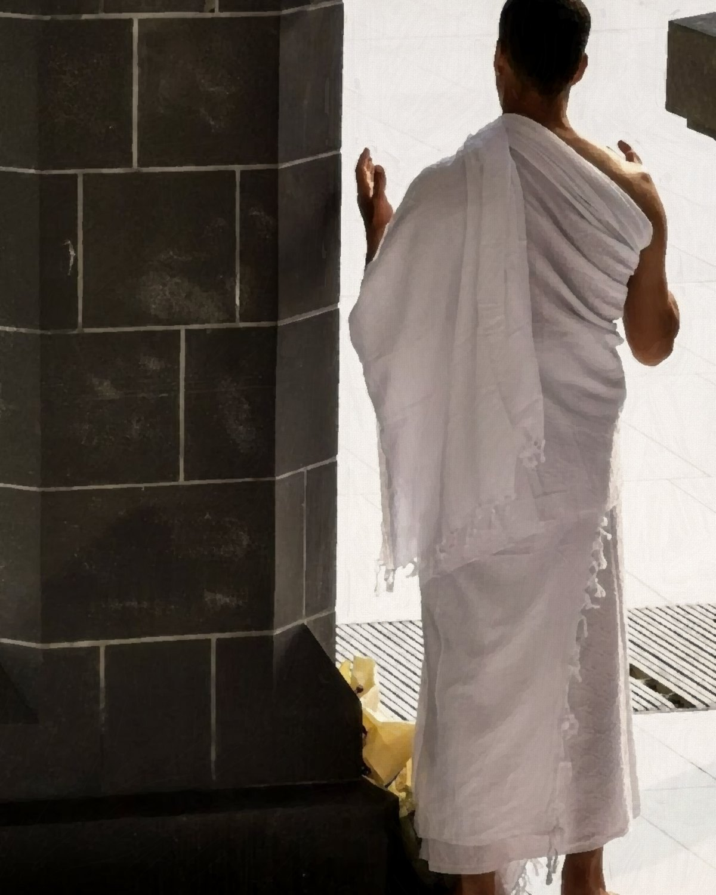
How to choose an ihram: fabric, weight and size
How towelling, waffle and terry weaves differ, what weight means in the heat, and how to choose between Regular and Long.
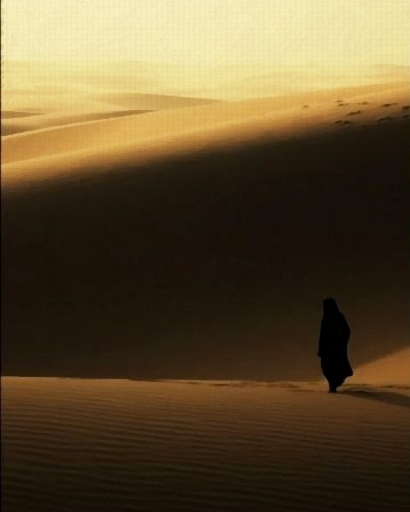
In preparationWhen to start preparing: a timeline for your trip
What to arrange eight weeks, two weeks and two days before departure, from permits and vaccinations to your final packing.
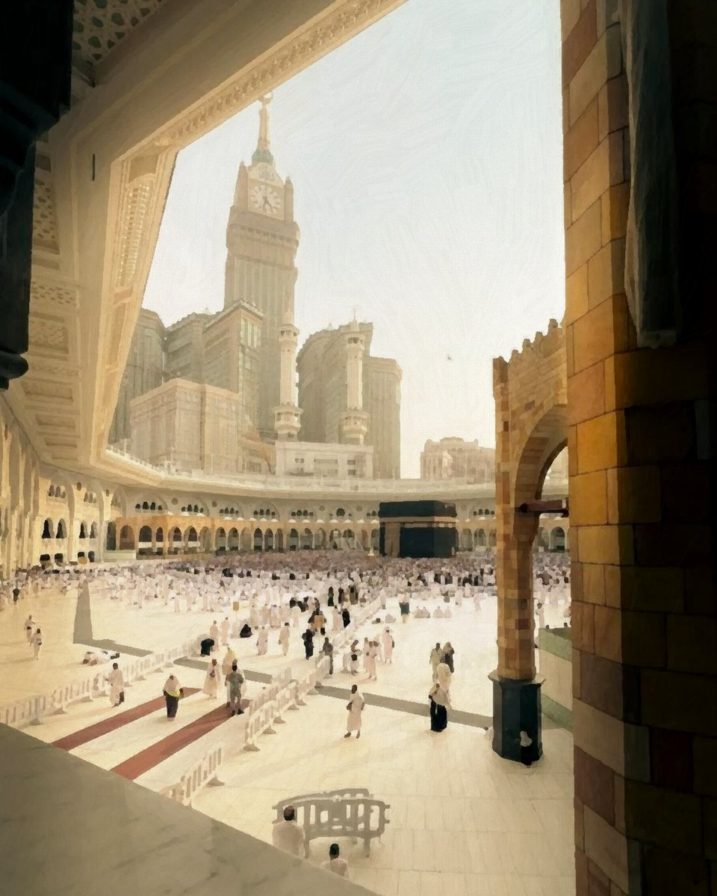
In preparationWhat women wear for Umrah and Hajj
Women do not need a white two-piece ihram. Practical guidance on modest, breathable clothing, hijabs and layers for the journey.
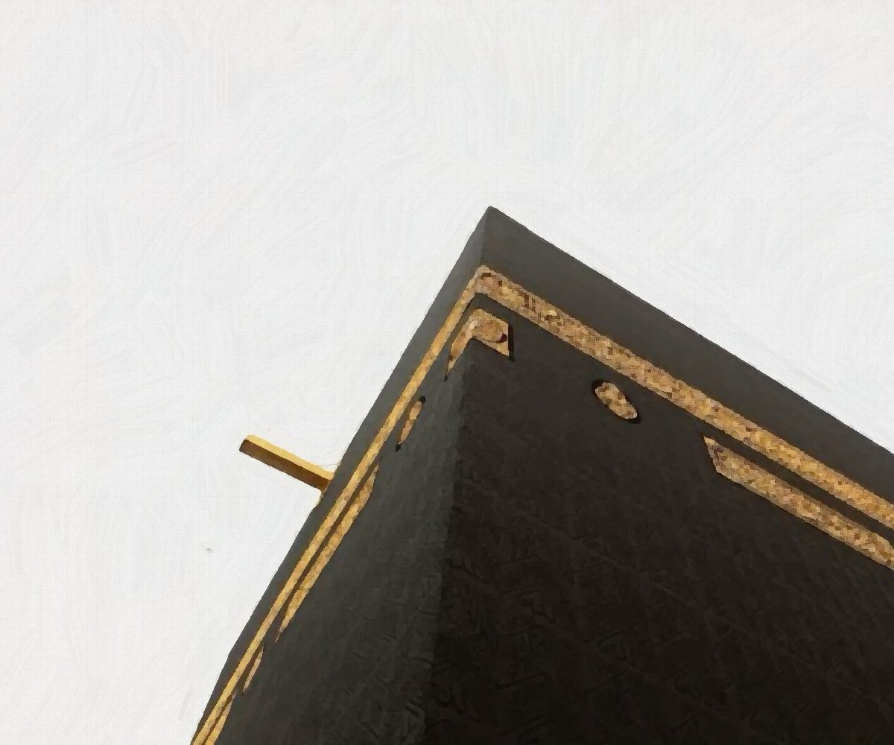
In preparationFragrance-free care: what to check before you travel
Why fragrance matters in the state of ihram, how to read a label and what to pack for before, during and after the rites.
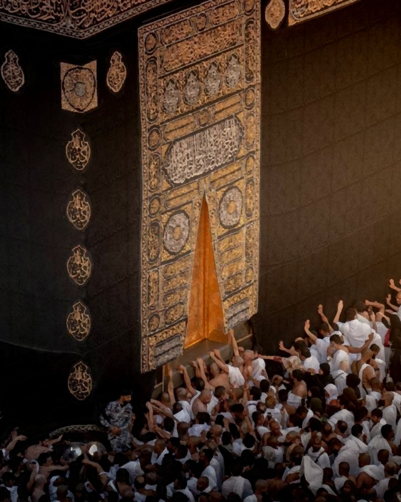
In preparationIhram for men: how to wear the izar and rida
How to fold and secure the izar, how to wear the rida, and how a belt keeps your documents safe without pins.
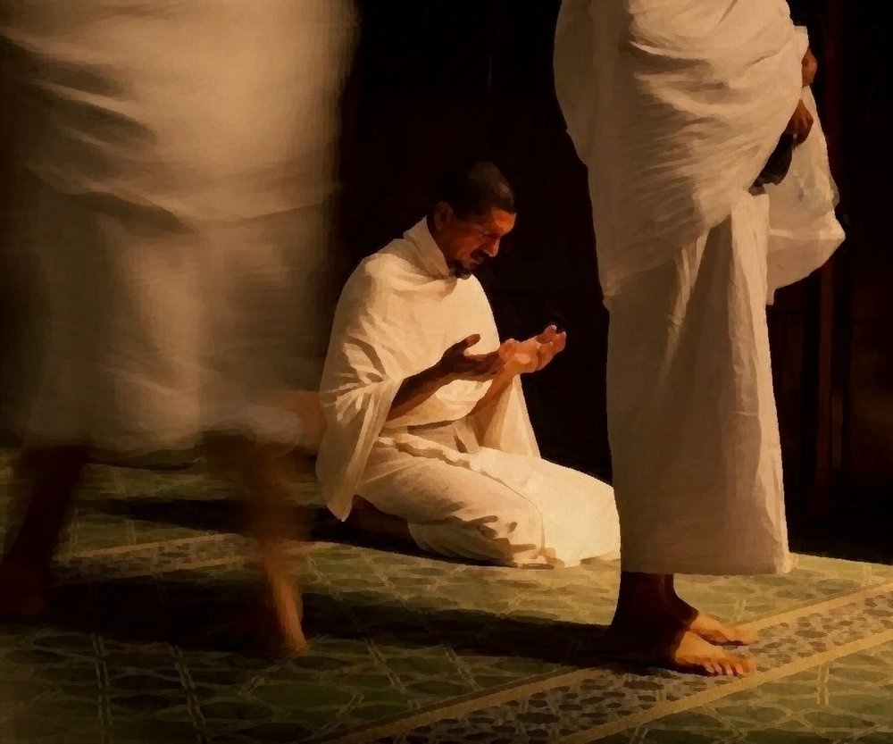
In preparationDuas for the journey, in Arabic and English
Duas for travel, entering ihram and each stage of the rites, with transliteration. Reviewed before publication.
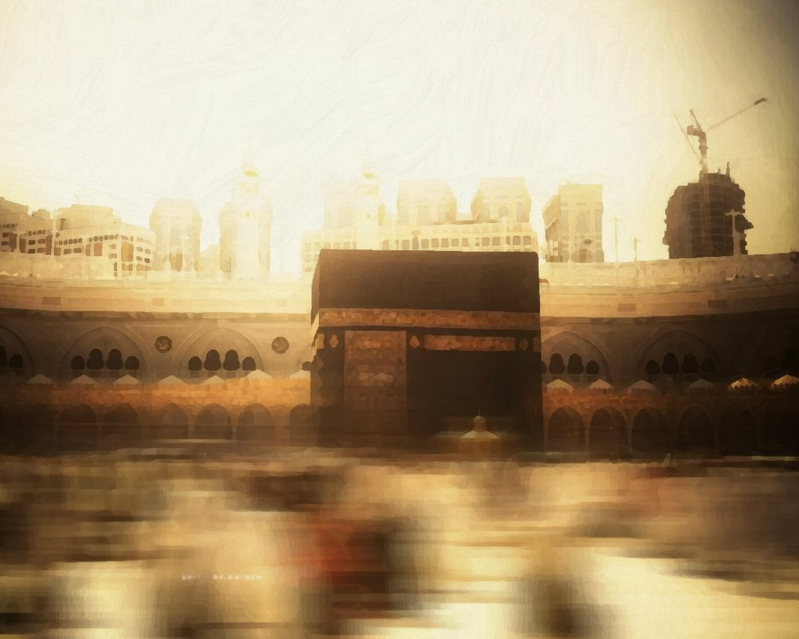
In preparationCaring for your ihram after the journey
Washing, drying and storing your ihram so it is ready for your next journey, or to pass on to a family member.
No guides in this stage yet. More guides are in preparation.
The pre-trip checklist
A one-page checklist for your journey, with reminders two weeks and two days before your travel date.
What you need, when you need it
Everything for the journey in one delivery.
Ready-made kits 02 Getting readyIhram and clothingFour ihram fabrics and the women's range.
Shop ihram 03 Before the miqatTravel essentialsFragrance-free care, prayer mat and tasbih.
Shop accessories 04 During and afterComfort on the daySun umbrella, pocket Quran and care set.
Shop accessoriesFrequently asked questions
What should men wear for Umrah?
Men in the state of ihram generally wear two unstitched cloths: the izar around the waist and the rida over the shoulders. Our buyer's guide explains fabrics and sizes. For specific questions, consult a qualified scholar.
Do women need to wear white for Umrah?
No. Women do not need a special white two-piece uniform. They wear suitable modest clothing and follow specific rules while in the state of ihram.
When should I enter ihram if I am flying?
If your flight crosses a miqat on the way to Makkah, you must enter the state of ihram before passing it. Many men change into the ihram garments before boarding or during the flight; the exact timing depends on your itinerary. Read the miqat guide.
Is wearing the ihram the same as entering ihram?
No. Wearing the ihram garments alone is not the same as entering the state of ihram, which begins with the intention made at or before the miqat.
Can I use toiletries while in ihram?
Fragrance restrictions apply while in the state of ihram. Choose fragrance-free products, check each item before you travel and follow your scholar's guidance.
How early should I order my ihram and essentials?
We recommend ordering at least one week before you travel. Next-day delivery is available across the UAE for orders placed before 2pm, and your travel date is checked at checkout.